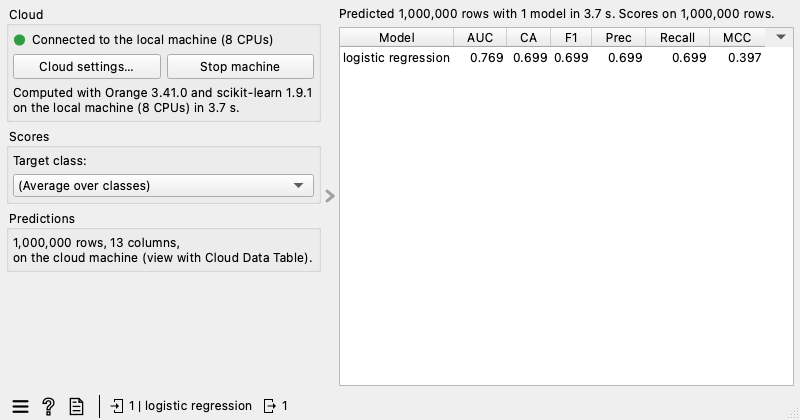

Predicts a cloud table with models from Cloud Learner, on the machine. The predictions stay on the machine; the scores are computed on all rows.

Like every Cloud widget, it has a Cloud box at the top: whether a machine is connected, Cloud settings… and Stop machine, and what the last job ran with, how long it took and what it cost. See Cloud widgets.
When the data has the target that the models predict, the table shows their scores on all rows with a known target. Target class chooses the class the scores are for. View the predictions with Cloud Data Table.
Models that predict another target get no scores and a warning. Predicting again deletes the previous predictions on the machine.